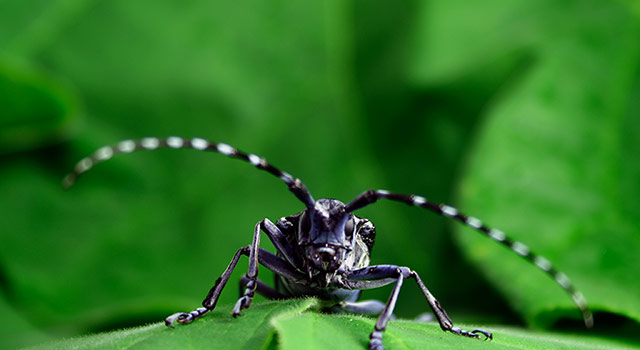
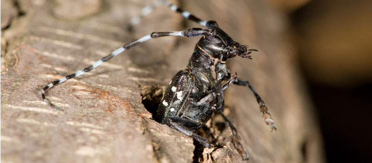
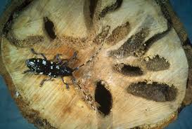
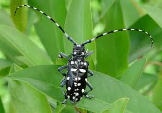

Benefical plants for the air can be very helpful for you and your home. A NASA study in 1989, showed that these benefical plants (plants listed later) can take in harmful toxins in the air, like household chemicals. These toxins can come from various cleaning solutions and synthetic materials. Before you go out and buy a plant, make sure that the plant is not toxic to your pet in any way. The downside of these plants is that they can promote mold growth and change humidity. If your plant has suitable drainage, mold won't be a problem Here is a list of some benefical plants: Areca Palm, Rubber Plant, Aloe Vera, Spider Plant, Gerbera Daisy, Snake Plant, Golden Pothos, Chrysanthemum, Red-Edged Dracaena, Weeping Fig, Azalea, English Ivy, Warneck Dracaena, Chinese Evergreen, Heart Leaf Philodendron, Peace Lily, Garden Mum, and the Boston Fern.
Here we will list the care for the plants that we suggested to use above. Areca Palm the care of this plant is on the easier side as you need to not neglect it as it will not tolerate this. The plant will need to be watered often but just to keep the soil moist in the spring and summer always let the soil dry in between waterings in winter. Only fertilize with time-realse in the spring as it burn the plant otherwise during other months. For the rest of the year exept winter and fall fertilize with average liquid fertilzer. Every two to three years it will need to be potted in a new pot with the same depth. To keep the plant smaller use a tighter pot. Potting too deeply will cause injury or death to the plant. When planting use normal potting mix with a handful of builders sand or palm soil. Rubber Plant care is not very difficult. Start with a younger plant as it will adapt much better than a adult plant. light that is required is bright but not direct as it will burn it. During spring and summer keep the plants soil moist as it is growing season. During growing season you will only need to water it once a month. When it is over watered the leaves will turn yellow and fall off. If the plants leaves begin to droop during dormant season then slowly increase water. When propagating use a two leaves that are about six inches long have at least two sets. Remove the bottom set of leaves and then dip the cutting into rooting hormone. Aloe Vera is a nice looking and easy plant to care for and they have useful juice from the leaves that can be used to heal burns and small cuts. These plants do best with bright, indirect light, with a well draining soil mix, and to live in an environmet from 55 to 80 degrees farenheit (13-27 celcius). Water the Aloe Vera throughly, but make sure that the soil dries well in between waterings. Some common illnesses in the plant is root rot, soft rot, fungal stem rot, and leaf rot, overwatering can cause theses illnesses. Aloe Vera is very dangerous to pets and humans when consumed. Spider Plants are easy to grow and will produce tiny white flowers in the summertime. Grow this plant in a soil based potting mix and in moderate indirect sunlight. These plants need a temperature of 55-80 degrees farenheit. Water occasionally until fully devolped then water moderatly. Fertilze twice a month in the spring and summer DO NOT OVER FERTILZE!!!! Here we only listed a few plants care from up above please do your own research on the others for happy and healthy plants!
Asian Longhorned Beetles also known as ALB, are prone to wiping out forests in a matter of days. The beetle is a extremly invasive wood boring beetle native to China and Korea. They primarily attack maple trees, poplars, horse-chestnuts, willows, elms, mulberries, and black locusts. ALB has killed thousands of trees across North America. To prevent ALB DO NOT move firewood from places that aren't local to you. As of now there are no defenses against ALB, and the beetles have very little predators. ALB kill trees by nesting in trees and thir larvae spread to other trees. The only way to prevent ALB is to recongnize the signs and to contact your local forestry department. Some signs of ALB are dime sized holes in trees, piles of sawdust at the base of the infected tree and oozing sap. The beetles have a shiny black body with white spots. For more information go to www.Beetlebusters.info
   